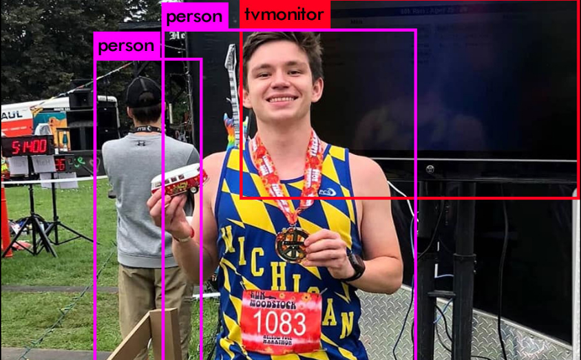
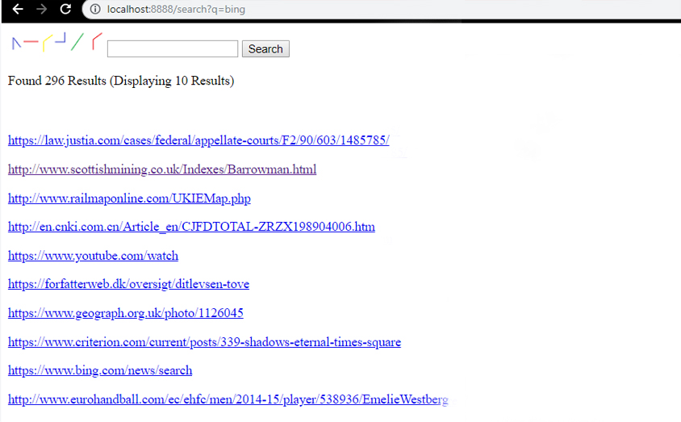
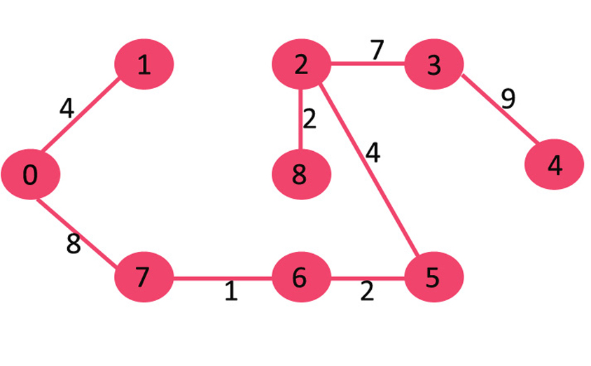
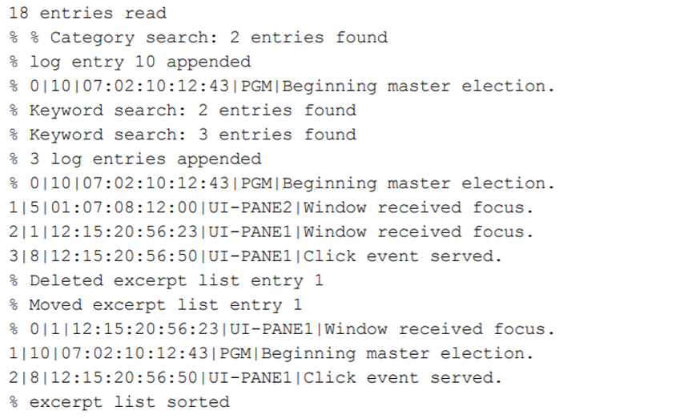

Projects
Here are some projects I've worked on over the past few years. Many were for my courses at the university, there are also some work/personal projects as well. The more recent/ongoing projects are at the top of the page.
Mcity Video Processor
My work at Mcity has primarily been implementing a pipeline in AWS Batch to process video footage from the self-driving shuttles. The pipeline runs a computer vision library called YOLO (You Only Look Once) with an underlying neural network called Darknet on a specified number of frames per video and uploads the labeled footage back to the source folder. The image on the right is an example of YOLO/Darknet's object detection on a picture of me after my first marathon.
Personal Website
This website has been a fun learning experience since I started with very little experience in HTML, JS, or CSS. I started with a template from html5up.net (there are more details in the webpages' source code) and began digging through the code to modify things and make it fit my own style. One of the more interesting parts of the project was figuring out the Google Maps API to get a custom map of Ann Arbor embedded on the home page.
Search Engine
One of my favorite projects was also one of the biggest I've ever worked on. I was part of a team of 6 students that built a search engine from the ground up in C/C++. Greple was the result of many sleepless nights in the library and can return results from an index of over 3 million documents. My work primarily focused on the implementation of the web crawler, query parser, and constraint solver components of the engine.
Zookeeper
The Zookeeper project was practice in implementing Minimum Spanning Tree (MST) algorithms. The project was zoo themed and the different parts of the project revolved around finding the most optimal routes to feed the animals or the most efficient cyclical route for water distribution.
Log Manager
This project mainly involved constructing a system where the user inputs a file containing log entries and has the ability to easily search through them. These excerpt lists were constructed using timestamp, category, and/or keyword searches on the logs within the system and then returned to the user.